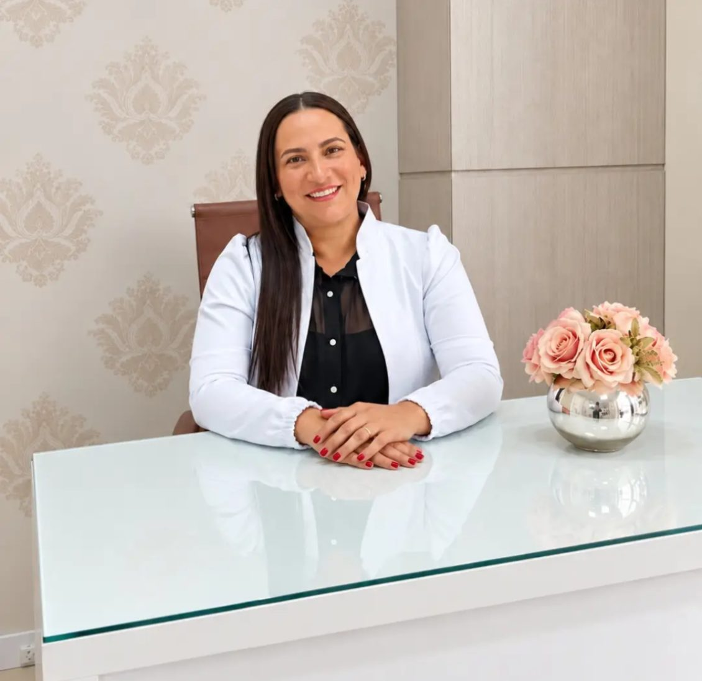
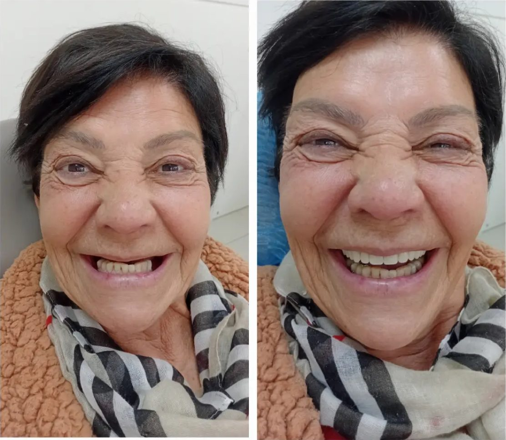
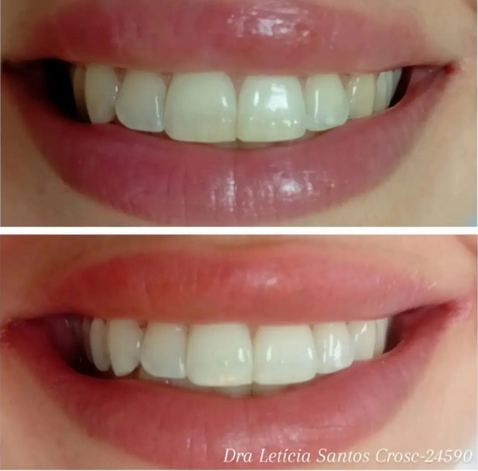
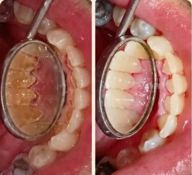

Limpeza e prevenção
Remoção de tártaro, placa e manchas que a escovação não alcança. O ideal é repetir a cada 5 a 6 meses.
Agendar limpezaCentro de Florianópolis e Sul da Ilha
Limpeza, clareamento, resinas, próteses e clínica geral com a Dra. Letícia Santos. Um atendimento humanizado, pensado também para quem tem medo de dentista.
Nota 4,8 no Google em 25 avaliações
Muita gente adia o dentista por medo ou vergonha. Aqui, nada acontece sem você entender antes.
Clínica geral, prevenção e reabilitação oral, do cuidado de rotina à devolução do sorriso.
Remoção de tártaro, placa e manchas que a escovação não alcança. O ideal é repetir a cada 5 a 6 meses.
Agendar limpezaReduz manchas e deixa o sorriso mais claro, com avaliação antes para indicar a técnica certa para você.
Quero clarear os dentesCorreção de cáries, fraturas e pequenas imperfeições, na cor do seu dente.
Avaliar restauraçõesPara quem perdeu dentes e quer voltar a sorrir e mastigar com segurança.
Conversar sobre prótesesTratamento de sangramento, inflamação e retração da gengiva.
Cuidar da gengivaAvaliação do momento certo para extrair o siso e placa para quem aperta ou range os dentes.
Tirar uma dúvidaCasos publicados pela Dra. Letícia no Instagram. Cada tratamento é planejado para a pessoa, e o resultado varia de caso para caso.



Acredito que cada pessoa que chega até mim merece ser acolhida, ouvida e cuidada com carinho.
Cirurgiã-dentista formada pela FURB, a Dra. Letícia mora e atende em Florianópolis. Mãe, esposa e empreendedora, ela escolheu a odontologia por acreditar que um sorriso pode devolver autoestima, confiança e saúde.
Oi Doutora, quero te agradecer por me ajudar a vencer o medo de dentista, obrigado pela atenção e cuidado comigo.
Paciente pelo WhatsApp
Revitalizou meu sorriso, trouxe minha autoestima de volta, atenciosa e sempre disponível no WhatsApp para tirar qualquer dúvida.
Mercedes M. no Google
Muito humana, super inteligente e acolhedora. Me senti segura para fazer procedimentos com ela!
Karoline C. no Google
Recepção nota mil e o atendimento e cuidado da Dra. Letícia também, super indico.
Franklin B. no Google
Gostei muito do trabalho que você fez, tanto de saúde como também da estética dos meus dentes. Valeu muito a pena.
Paciente pelo WhatsApp
Profissional extremamente competente e atenciosa. Indico de olhos fechados.
Nicoli G. no Google
Sem pressa. A primeira consulta é uma conversa: a Dra. Letícia ouve o que você sente, explica cada etapa antes de fazer e respeita o seu ritmo.
Em geral, a cada 5 a 6 meses. A limpeza profissional remove o tártaro e a placa que a escovação não alcança e ajuda a prevenir cárie, gengivite e mau hálito.
Depende. Falta de espaço, dor, inflamação ou cárie são motivos comuns, mas cada caso é avaliado com exame clínico e radiografia para definir se e quando extrair.
No Centro de Florianópolis, na R. Emílio Blum, 131, sala 606, e também no Sul da Ilha. O agendamento das duas unidades é feito pelo WhatsApp (48) 97400-4538.
Preencha em menos de um minuto. O WhatsApp abre com a sua mensagem pronta, e a Dra. Letícia responde para combinar o melhor horário.